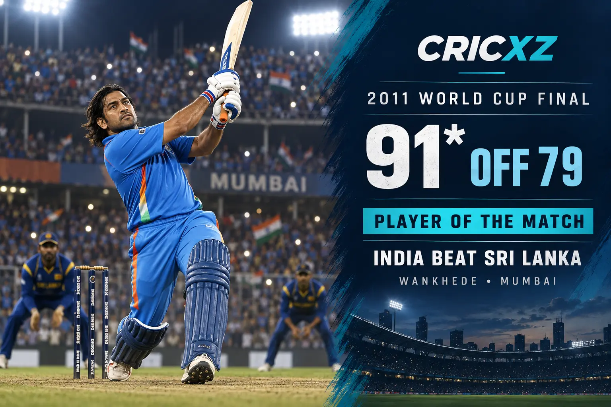

Test
- Matches
- 90
- Innings
- 144
- Not outs
- 16
- Runs
- 4,876
- Highest score
- 224
- Batting average
- 38.09
- Strike rate
- 59.11
- Hundreds
- 6
- Fifties
- 33
- Dismissals
- 294

MS Dhoni scored 17,266 runs and completed 829 dismissals across Test, ODI and T20I cricket. He also captained India to the 2007 T20 World Cup, 2011 Cricket World Cup and 2013 Champions Trophy titles.
Career statistics are final.
Dhoni retired from international cricket in August 2020. The figures above were verified against ICC career records and ESPNcricinfo's statistical profile.
Dhoni played 538 international matches, scoring 17,266 runs and recording 829 wicketkeeping dismissals. His calm finishing, fast work behind the stumps and leadership across all three formats shaped one of India's most successful eras.

Dhoni promoted himself in the final against Sri Lanka at Wankhede Stadium and made an unbeaten 91 from 79 balls. He finished the chase with a six, earned the Player of the Match award and led India to its second men's ODI World Cup title.
2 December 2005 – 30 December 2014
Debuted against Sri Lanka in Chennai and made his final Test appearance against Australia in Melbourne.
23 December 2004 – 9 July 2019
Debuted against Bangladesh in Chattogram and played his final ODI against New Zealand in the World Cup semi-final at Manchester.
1 December 2006 – 27 February 2019
Debuted against South Africa in Johannesburg and made his final T20I appearance against Australia in Bengaluru.
Finished with 4,876 Test runs, 10,773 ODI runs and 1,617 T20I runs.
Completed 634 catches and 195 stumpings as India's wicketkeeper.
Led India in more international matches than any captain before him.
Captained India to the inaugural men's T20 World Cup title in South Africa.
Made 91 not out and was Player of the Match in the final against Sri Lanka.
Completed a unique set of three major ICC limited-overs titles as captain.
Received India's highest sporting honour after leading the country to the inaugural T20 World Cup title.
Received India's fourth-highest civilian award.
Received India's third-highest civilian award for his contribution to cricket.
Was inducted into the ICC Cricket Hall of Fame in recognition of his international career and leadership.
Compare Dhoni's career with Sachin Tendulkar's international records, or browse more CricXZ player profiles.